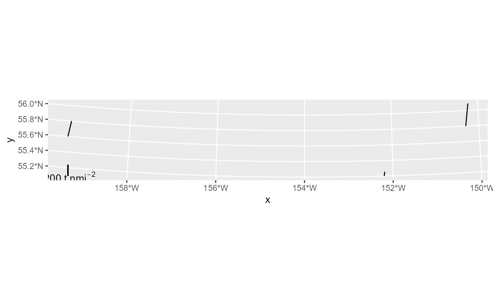

Return a legend that can be added to stickplots
build_stick_legend.RdAccepts a dataframe returned from the build_sf_sticks function and returns a nicely placed legend bar.This legend is half the height of the tallest value in the dataframe. This object can be plotted using ggplot2::geom_sf() or base plot.
Usage
build_stick_legend(
stick_data,
legend_pos = "right",
legend_color = "white",
legend_label = NULL,
fontsize = 11,
barwidth = 0.75
)Arguments
- stick_data
A 'stick' dataframe returned from
build_sf_sticks.- legend_pos
One of 'right' or 'left'; legend bar will be placed at the corresponding corner.
- legend_color
Default is white for standard MACE basemaps; specify alternates in standard
ggplot-compatible formats- legend_label
Defaults to a label in standard MACE units (t/nmi^2); specify alternate if needed to reflect your units
- fontsize
The font size for the stickplot legend. Defaults to a reasonable size for reports; make larger for presentations. ~18 works.
- barwidth
The width of the legend bar. Defaults to a reasonable size for reports; make larger for presentations. ~ 3 works.
Examples
library(ggplot2)
library(sf)
dat <- data.frame(
"x" = c(-152.2, -150.3, -159.4),
"y" = c(55.2, 55.8, 55.6),
"z" = c(75000, 400000, 280000),
"species" = c("a", "a", "b")
)
sticks = build_sf_sticks(x = dat$x, y = dat$y, z = dat$z, rotation = 15, crs = 3338)
legend = build_stick_legend(stick_data = sticks, legend_pos = 'left', legend_color = 'black')
ggplot()+
geom_sf(data = sticks)+
legend
